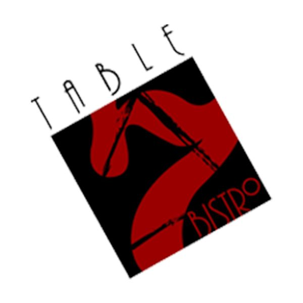
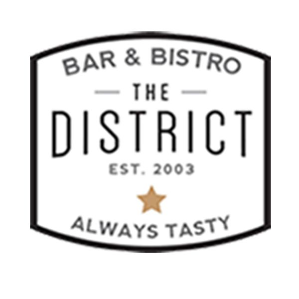

Our original concept with locations in Midtown, Eado, and The Tunnels!


Casual fine dining in the heart of Downtown Houston!
Attached to the District on Main, our wine bar concept is a beautiful space ideal for a quiet spot to sip on wine, to a great venue for large parties.
A quick spot for comfort food, the Bistro is attached to the Club Quarters Hotel in downtown Houston, this has been a long time favorite for hotel guests and nearby residents.
The best of two worlds, our dual concept restaurant features some of the best pizza in town, and mexico city style tacos.